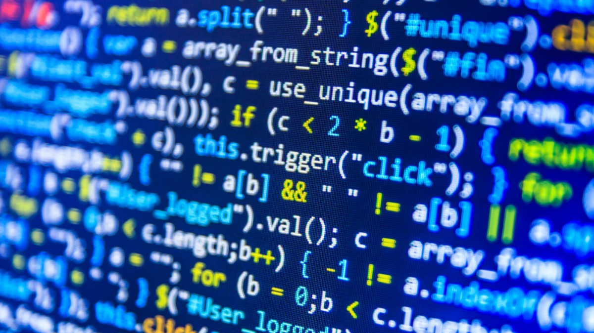

Introdução ao Python
Python é uma linguagem simples e poderosa. Neste tutorial, você aprenderá os básicos: variáveis, loops e funções. Ideal para iniciantes!
Assista o VídeoAprenda a programar com tutoriais explicativos e vídeos incríveis!
 Home Tutoriais ContatoJavaScript e Python
JavaScript e Python são linguagens de programação poderosas e populares, mas com usos, sintaxe e características distintas. A principal diferença reside em sua aplicação primária: JavaScript domina o desenvolvimento web interativo no navegador (frontend), enquanto Python é uma linguagem de propósito geral com forte presença em back-end, ciência de dados, inteligência artificial e automação.
Onde são usados
JavaScript:
Python:
Python é uma linguagem simples e poderosa. Neste tutorial, você aprenderá os básicos: variáveis, loops e funções. Ideal para iniciantes!
Assista o VídeoDomine o JavaScript para criar sites interativos. Cobrimos DOM, eventos e APIs. Perfeito para desenvolvedores front-end.
Assista o VídeoAprenda algoritmos eficientes com C++. Exemplos práticos de sorting e busca. Avançado, mas explicativo passo a passo.
Assista o Vídeo